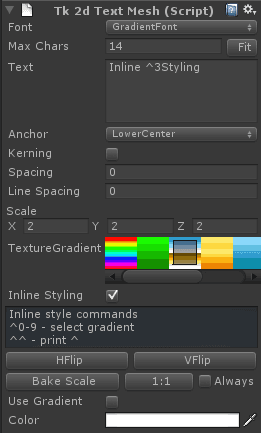

Documentation
Script Reference
Forum
Documentation
Script Reference
Forum

Font - Select a font from the project.
Max Chars - Number of character to allocate memory for. The TextMesh will not display more than this number of characters. It is not a good idea to change this while the game is running.
Fit - Automatically select the appropriate number of Max Chars based on the text in the Text box below.
Text - Default text to display
Anchor - Anchor point for the text
Kerning - Enable or disable kerning on this TextMesh. It is a lot quicker to have kerning disabled, so only turn it on when really needed.
Scale - Scale the text mesh without breaking instancing.
Texture Gradient - Select a text gradient to use for this text mesh
Inline Styling - When ticked, will intepret ^0 - ^9 within your string to select the first 10 gradients in your list. You do not need 10 gradients in your list, this index simply lets you chose up to 10 of them. If you need to draw the ^ character with Inline Styling enabled, use ^^ instead.
1:1 - Clicking this will make the textmesh draw pixel perfect for the current main camera. If Always is selected, this sprite will resize itself to display 1:1 on startup. This will change the scale parameter.
Bake Scale - Transfers transform.localScale to textMesh.scale and resets transform.localScale to 1, 1, 1. This lets you use the built in unity scale widgets, and clicking on Bake Scale will recursively transfer all localScale values, so dynamic batching will work once more.
Use Gradient and Colors - Color your text, or apply a vertical gradient on it.